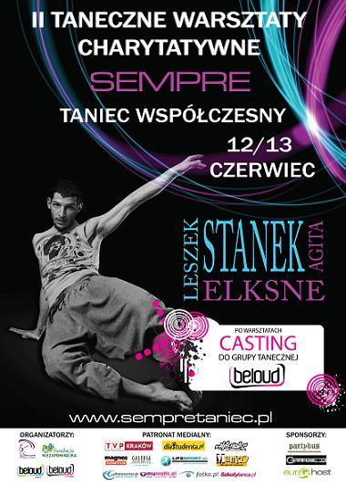

Kontynuujemy nasze działania charytatywne !!
Ostatnio wraz z Michałem Pirógiem, udało nam się zebrać 3300 zł dla dzieciaków Fundacji Niezapominajka !!
Dziękujemy za pomoc, gdyż to przede wszystkim WASZA zasługa !! ... ale dla nas to wciąż mało... i chcemy pobić ten rekord !!:)
W dniach 12 - 13 czerwca w Szkole Tańca SEMPRE odbędą się charytatywne warsztaty taneczne Tańca Współczesnego z udziałem LESZKA STANKA!!
Cały dochód z Warsztatów zostanie przekazany na rzecz dzieci z Fundacji Ilony Felicjańskiej "NIEZAPOMINAJKA"
UWAGA !! Zaraz po niedzielnych warsztatach odbędzie się OSTATNI CASTING do grupy tanecznej BELOUD !!
INSTRUKTORZY:
Leszek Stanek - w 2004 ukończył Państwowe Studium Wokalno-Baletowe w Gliwicach.
Jako student występował w wielu produkcjach Gliwickiego Teatru Muzycznego, m.in. "Hallo Dolly" w reż. Marii Sartowej, "Fooltoose" w reż. Macieja Korwina i choreo. Jarosława Stańka.
W obu z nich zaprezentował swoje wszechstronne możliwości zarówno w tańcu, śpiewie, jak i grze aktorskiej.
W tym czasie prowadził również systematycznie warsztaty z biomechaniki i improwizacji ruchowej w Teatrze Małym w Tychach i Młodzieżowym Studiu Aktorskim.
W latach 2003/2007 Leszek był tancerzem Śląskiego Teatru Tańca. W tym czasie nie tylko był inicjatorem wielu projektów edukacyjnych, społecznych i artystycznych, lecz także pod kierunkiem Jacka Łumińskiego wypracował wiele niezapomnianych ról - stworzył postacie wyróżniające się siłą charakteru i głębią uczuć w spektaklach takich, jak:
"7,5", "Wrzaskowisko", "Czar Zwyczajnych Dni - sen Świętego" "Changing Lanes". Ze Śląskim Teatrem Tańca występował, m.in. w Kanadzie, Indiach i Portugalii . Brał udział również jako tancerz w projektach Mariusza Trelińskiego "Król Roger" oraz "Siedem Bram Jerozolimy" Pedereckiego.
Zdobywca stypendium Ohio Colombos University, założyciel Studia Teatru Fizycznego w Bytomiu,
Gra Kubę, jedną z pierwszoplanowych ról w serial "Tancerze" (TVP2)
Jako dyrektor artystyczny IQ ARTivist's był inicjatorem założenia grupy Dance Event Production (DEP) zrzeszającej wybitnych tancerzy tańca towarzyskiego (Ewa szabatin, Edyta Herbuś, Rafał Maserak, Kamila Kajak, Magda Soszyńska i inni)
Praktykę nauczycielską zdobywał m.inn. w Ogólnokształcącej Szkole Baletowej w Bytomiu.
Dotychczas stworzył kilka autorskich spektakli, które spotkały się z pozytywnym odbiorem zarówno krytyki jak i publiczności.
Dotychczasowe spektakl Stanka: